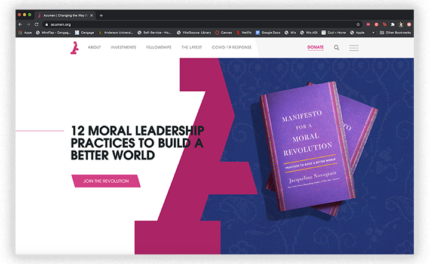

Research
I conducted research about the Project Hope Foundation as my primary research and the secondary research was directed towards how other autism sites are used. Following the research, I interviewed two key people in determining the main goals for this site.
Primary client research

Project Hope Foundation is a non-profit organization focused towards people of all ages with autism. This organization has grown over the years to now have 8 different locations for services in South Carolina. HOPE is an accranem that stands for “Help Our Potential Emerge.” This organization was started by two moms with boys that were diagnosed with autism in 1996. The rate of autism in kids was 1 in 2,500 and both of these women had a son with the diagnosis. They knew their boys needed some extra help to succeed and they began the mission to create an organization that will help anyone with autism.
My client has a strong social media presence. They interact with their followers strongly. Recently, they had a tshirt design contest and allowed people to submit their designs to go in the running. They are known strongly by the acreanem HOPE as well as the painted-like sunshine as the logo.
The website for Project Hope Foundation is full of information and imagery, but there is a lack of organization and flow to the information they have. The use of photos brings their project to life by assosiating it with real people, but the overlap with text takes away from the purpose of the information and the special moments captured in photos.
Secondary Research
Autism has not just one type, but many different ones. This disorder refers to a broad range of conditions characterized by challenges with social skills, repetitive behaviors, speech and nonverbal communications. According the Centers for Disease Control, autism affects 1 in 54 children in the US today. Autism types vary, but are influenced by a combination of genetic and environmental factors. Autism is considered a spectrum disorder, but each person falls at a different place on the spectrum. Each person has a distinct set of strengths and challenges. Signs of Autism are usually apparent by the ages of 2 or 3, but sometimes as early as 18 months.
All information quoted from Autism Speaks at https://www.autismspeaks.org/

Autism Speaks
This site begins with a thorough description of Autism. As you scroll there are call to action buttons features at sections to access more information. There is one for how to learn the signs of Autism, a section for resources, a call to action directed towards adults and teens who feel they might have signs.
One important feature on this site is having multiple sections that apply to different groups of people to help them learn more in the areas they need. As one continues reading they share news articles that are happening right now in hopes to keep the community informed.

Autism Society
The first thing to appear on this site is a large section about learning more about the candidates of the 2020 election. There is a learn more call to action button for people to access resources sharing who upholds the values that back Autism. Below there is a brief description of what autism is and then a call to action to learn more. Following are two stories from real people and a call to read more button. After is a resources section for the location options and contact. Lastly is recent news associated with Autism.

South Carolina Autism Society
One the front page there is a slideshow with a welcome image and following are two call to action buttons for donating and learning more. Next there is a description of what the South Carolina Autism Society is and then a "how you can help" section. An inset box is next with the purpose of this society with a call to action. They have a section about events, volunteer opportunities, covid 19 resources, and lastly a brief section of what autism is.

Acumen
The home page for the Acumen website has a strong user interaction. Throughout this page as the user scrolls new images, links, information appear. The user is more likely to engage with this information because it is in motion. The movement is subtle but interacts with the user enough to control where his/her eye is drawn to.
Another feature that works well is the menu bar at the top of the page. The menu bar stays fixed as the user scrolls down the page. The constant option for the user to engage with other pages is key for easy navigation. Within the details of the menu bar, the donate "button" is very effective in the pink color type while changing to white type and the pink background with the drop down menu. The rest of the options in the menu bar are more subtle but are easily navigated by any user.

Invisible Children
This site does an exceptional job of using type with images. The section under "Communities Making Communities Safe" displays the use of text, type, and color. This type of image menu is engaging to the user's eye as it interacts with each move of the mouse. The site uses images in a block section and then has a strong use of white space after to break up the images and let the information breathe.